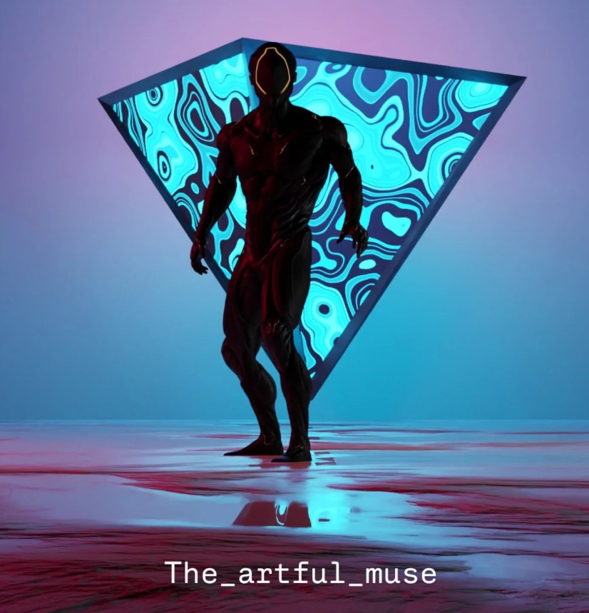

This works to record the whole screen along with google tabs 

<!doctype html>
<html>

<head>
    <script src="https://aframe.io/releases/1.0.4/aframe.min.js"></script>
    <script src="https://raw.githack.com/AR-js-org/AR.js/master/aframe/build/aframe-ar.js"></script>
    <script src="https://raw.githack.com/donmccurdy/aframe-extras/master/dist/aframe-extras.loaders.min.js"></script>
    <script
        src="https://raw.githack.com/AR-js-org/studio-backend/master/src/modules/marker/tools/gesture-detector.js"></script>
    <script
        src="https://raw.githack.com/AR-js-org/studio-backend/master/src/modules/marker/tools/gesture-handler.js"></script>
    <style>
        body {
            margin: 0;
            padding: 0;
        }

        .logo {
            position: fixed;
            bottom: 10px;
            right: 10px;
            width: 80px;
            height: auto;
            z-index: 1000;
        }

        .download-link {
            position: fixed;
            bottom: 100px;
            right: 10px;
            width: 80px;
            height: auto;
            z-index: 1000;
        }

        .start-button, .stop-button, .share-button {
            position: fixed;
            left: 10px;
            padding: 10px 15px;
            background-color: #007bff;
            color: white;
            border: none;
            border-radius: 5px;
            cursor: pointer;
            z-index: 1000;
        }

        .start-button { bottom: 90px; }
        .stop-button { bottom: 50px; }
        .share-button { bottom: 10px; }

        .share-button:hover { background-color: #0056b3; }
    </style>
</head>

<body style="margin: 0; overflow: hidden;">
    
    <button class="share-button" id="shareBtn">Share</button>
    
    <script>
        document.getElementById("shareBtn").addEventListener("click", () => {
            const url = window.location.href;
            if (navigator.share) {
                navigator.share({ title: document.title, url: url })
                    .catch(err => console.error("Error sharing:", err));
            } else {
                navigator.clipboard.writeText(url)
                    .then(() => alert("URL copied to clipboard!"))
                    .catch(err => console.error("Clipboard error:", err));
            }
        });

        let mediaRecorder;
        let recordedChunks = [];

        async function startRecording() {
            let screenStream = await navigator.mediaDevices.getDisplayMedia({ video: true, audio: true });
            mediaRecorder = new MediaRecorder(screenStream, { mimeType: "video/webm" });

            mediaRecorder.ondataavailable = (event) => {
                if (event.data.size > 0) {
                    recordedChunks.push(event.data);
                }
            };

            mediaRecorder.onstop = () => {
                const blob = new Blob(recordedChunks, { type: "video/webm" });
                const url = URL.createObjectURL(blob);
                const download = document.getElementById("download");
                download.href = url;
                download.download = "recording.webm";
                download.style.display = "block";
            };

            mediaRecorder.start();
        }

        document.getElementById("start").addEventListener("click", async () => {
            recordedChunks = [];
            await startRecording();
            document.getElementById("start").disabled = true;
            document.getElementById("stop").disabled = false;
        });

        document.getElementById("stop").addEventListener("click", () => {
            mediaRecorder.stop();
            document.getElementById("start").disabled = false;
            document.getElementById("stop").disabled = true;
        });
    </script>

    <a-scene vr-mode-ui="enabled: false;" loading-screen="enabled: false;" renderer="logarithmicDepthBuffer: true;"
        arjs="trackingMethod: best; sourceType: webcam; debugUIEnabled: false;" id="scene" embedded gesture-detector>
        <a-assets>
            <a-asset-item id="animated-asset" src="assets/asset.gltf"></a-asset-item>
        </a-assets>

        <a-marker id="animated-marker" type="pattern" preset="custom" url="assets/marker.patt"
            raycaster="objects: .clickable" emitevents="true" cursor="fuse: false; rayOrigin: mouse;" id="markerA">
            <a-entity id="bowser-model" scale="0.0021 0.0021 0.0021"
                animation-mixer="loop: repeat" gltf-model="#animated-asset" class="clickable"
                gesture-handler></a-entity>
        </a-marker>

        <a-entity camera></a-entity>
    </a-scene>
</body>

</html>
